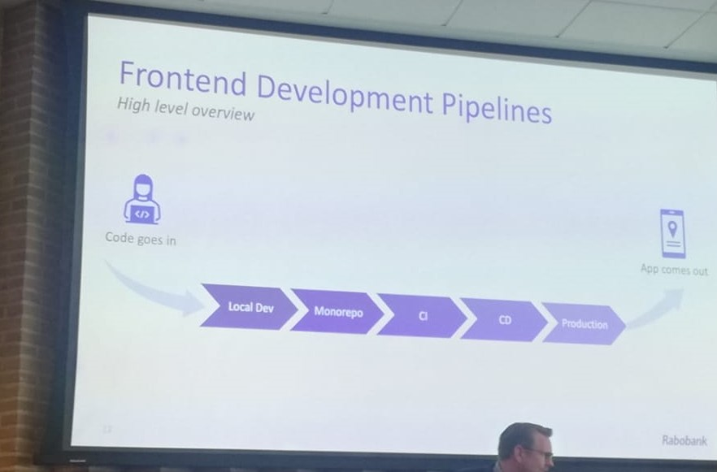
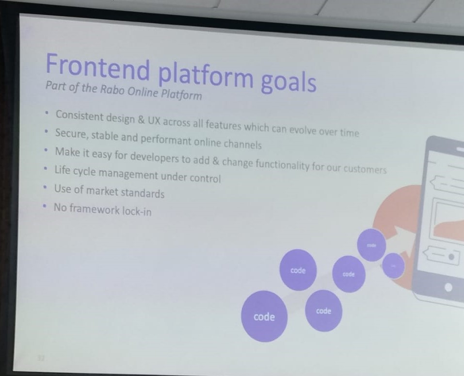

Developing and maintaining the Rabobank frontend platform
Door: r20222
14-04-2023
Nadat we bij de workshop over ethical hacking waren geweest gingen we naar de informatie bijeenkomst over developing and maintaining the Rabobank frontend platform
De Rabobank werkt met heel veel verschillende frontend teams. Elk team ontwikkeld zijn eigen features, die gebouwd worden met Angular. Ze werken met pipelines. Bekijk de afbeelding hieronder, hier is op te zien dat de code de pipeline ingaat, en uiteindelijk komt de applicatie eruit. Binnen die pipeline gebeuren er wel nog enkele dingen:

De Rabobank frontend teams werken met 1 monorepo. Een monorepo is een repository waar de code in staat opgeslagen voor alle lopende projecten. Hierdoor heb je niet allemaal verschillende repositories nodig.
Tijdens de vragenronde vroeg ik hoe ze rekening houden met progressive enhancement. Ze vertelden dat ze aan testen doen (oa ook lighthouse testen), maar dat ze bijvoorbeeld de apps niet meer maken voor hele oude apparaten en browsers vanwege de veiligheid.
Het Rabobank frontend platform heeft een aantal doelen waar ze zich aan willen houden. Lees ze hieronder in de afbeelding:
